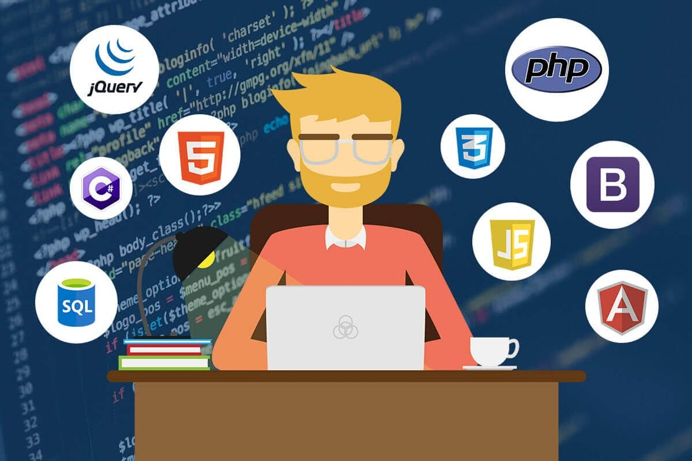

Full - stack dasturlash o'z ichiga front - end va backend qismlarni qamrab oladi. Oddiy misol bilan tushunishga harakat qilaylik :Lekin hech bir inson hech narsasi yo'q , bo'm - bo'sh imoratga ko'chib borishni istamaydi ? Hatto u yerda yashab bo'lsa ham . Vaziyat taqozosi bilan katastrofa vaqtida ( Xudo asrasin ) masalan tuman hokimligi hech vaqosi yo'q bo'm - bo'sh imoratga ko'chib borishi ham mumkun . Hokimlik u imoratda ham o'z faoliyatini davom ettiradi . Lekin bu holat hokimiyatga kelgan insonlarda noxush hissiyot uyg'otadi . Shu kabi veb saytlar ham faxatgina html va css bilan qurilsa shunaqa hech vaqosi yo'q imoratga o'xshab qoladi . Albatta katta mehnatlar bilan imorat ichidagi stol - stullarni qo'ldan , yog'ochlar(html) va bo'yoqlar (css) orqali didimizga moslab yasab olish mumkun . Lekin tayyor va a'lo sifatli italyan mebellari turganda qo'ldan yasashga na hojat ? Boz ustiga ular bepul bo'lsa 😀😀😀 ?Xo'sh ular nima ekan ?
Hozirda foydalanuvchi interfeysi ramkalari to'g'ridan to'g'ri html sahifa ichiga qo'yilmaydi. Ular uchun maxsus foydalanuvchi interfeysi kutubxonalari majvud. Masalan hammamiz bilgan va sevgan React , Angular va Vue .
Xulosa qiladigan bo'lsak backend dasturchining html va css ni bilishi uni full - stack dasturchi qilmaydi. HTML va CSS ni bilish bugun har bir backend dasturchiga qo'yiladigan talablardan eng muhimlaridan sanaladi . Shunday e'kan full - stack dasturchi bo'lishga qaror qilgan e'kansiz , demakki siz front - end dasturchilikni ham albatta o'rganishingiz kerak . Yo'qsa ish beruvchi full - stack dasturchi vakanciyasiga sizni qabul qilmasligi mumkun. Barchaga omad !!!!!!